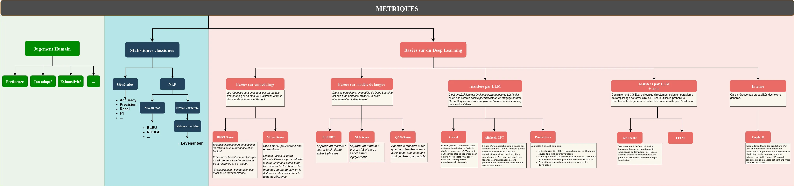

Guide du LLM
PARTIE II. Développements autour des LLMs (pour les data scientists)
3. Évaluations (Zhanna Daphné)
3.1 Objectif
Tous les LLM visent le même objectif : maîtriser le langage naturel et par là même, égaler l’humain dans des tâches telles que le résumé, la traduction, la reconnaissance des entités nommées, etc.
Cependant, tous les LLM souffrent des mêmes défauts, de façon plus ou moins prononcée:
* Très grande sensibilité du modèle au prompt utilisé
* Les affirmations produites par les LLM ne sont pas toujours factuellement correctes (on parle d'hallucinations)
* Les LLM peuvent avoir des comportements inattendus et dangereux suite à l'usage de prompts malveillants, de données
d'entraînement biaisées, au recours à des agents trop permissifs, etc.On souhaite donc se doter d’un cadre de comparaison qui permette d’affirmer que tel LLM est plus performant ou plus fiable que tel autre. On devra recourir à différentes métriques pour mesurer differents aspects du problème (fiabilité, sécurité, absence de biais…)
Si de nombreux bancs d’essai existent aujourd’hui, permettant de distinguer certains LLM, il ne faut pas oublier que de bonnes performances dans un banc d’essai ne sont pas suffisantes, et qu’il est primordial de mettre en place un système d’évaluation quasi temps réél du LLM une fois en production.
3.2 Quelques concepts à connaître
a) Scenario
Un scénario est un ensemble de conditions dans lesquelles la performance du LLM est évaluée. Il s’agit par exemple de
- Réponse aux questions
- Raisonnement
- Traduction
- Génération de texte
- …
b) Tâche
Une tâche constitue une forme plus granulaire d’un scénario. Elle conditionne plus spécifiquement sur quelle base le LLM est évalué. Une tâche peut être une composition de plusieurs sous-tâches.
- Combinaisons de sous-tâches de difficulté variée
Par exemple, l’arithmétique peut être considérée comme une tâche constituée des sous-tâches arithmétique niveau 1er degré, arithmétique niveau collège, arithmétique niveau lycée, etc.
- Combinaison de sous-tâche de domaines variés
La tâche de type QCM peut être vue comme la combinaison de QCM histoire, QCM anglais, QCM logique, etc.
c) Métrique
Une métrique est une mesure qualitative utilisée pour évaluer la performance d’un modèle de langage dans certaines tâches/scénarios. Une métrique peut être :
- une fonction statistique/mathématique déterministe simple (par exemple, précision ou rappel)
- un score produit par un réseau neuronal ou un modèle de Machine Learning (ex. : score BERT)
- un score généré à l’aide d’un LLM (ex. : G-Eval)
Notons que dans le dernier cas, évaluer un LLM à l’aide d’un LLM peut donner l’impression du serpent qui se mord la queue. Cependant, ce type de ‘dépendances circulaires’ existe couramment et est bien acceptée dans d’autres dommaines. Lors d’un entretien d’embauche par exemple, l’intellect humain évalue le potentiel d’un autre être humain.
d) Benchmarks
Les benchmarks sont des collections standardisées de tests utilisées pour évaluer les LLM sur une tâche ou un scénario donné. On trouvera pas exemple :
- SQuAD pour le scénario de réponse aux questions de l’utilisateur à partir d’extraction de parties d’un corpus (En anglais)
- PIAF semblable à SQuAD mais en français
- IMDB pour l’analyse des sentiments
- …
A titre d’exemple, l’image ci-dessous présente le corpus PIAF. Il est composé de paragraphes issus d’articles de Wikipedia, et d’une liste de questions portant sur ces paragraphes.

3.3 LLM Model Evaluation vs. LLM System Evaluation
L’expression évaluation de LLM peut recouvrir différentes pratiques et différents objectifs. On doit ainsi distinguer l’évaluations de modèles LLM de l’évaluations de systèmes LLM. Les évaluations de modèles LLM s’intéressent aux performances globales. Les entreprises/centres de recherche qui lance leurs LLM ont besoin de quantifier leur efficacité sur un ensemble de tâches différentes.
Il existe de nombreux benchmarks qui permettent d’illustrer les performances des modèles sur des aspects précis, comme HellaSwag (qui évalue la capacité d’un LLM à compléter une phrase et faire preuve de bon sens), TruthfulQA (qui mesure la véracité des réponses du modèle) et MMLU (qui mesure la capacité de compréhension et de résolution de problèmes ).

(Source https://towardsdatascience.com/llm-evals-setup-and-the-metrics-that-matter-2cc27e8e35f3)
L’évaluation de systèmes LLM couvre l’évaluation de tous les composants de la chaîne, pour un modèle donné. En effet, un modèle de LLM est rarement utilisé seul. A minima, il faut lui fournir un prompt, et celui-ci aura un fort impact sur le résultat du modèle. On pourra s’intéresser par exemple à l’effet du prompt sur la politesse de la réponse, le style, le niveau de détail, etc. Un modèle peut également recevoir un contexte (ensemble de documents, tableaux, images…) et son influence doit également être mesurée. On pourrait par exemple s’apercevoir que le modèle produit des résumés de qualité quand on lui fournit des documents littéraires, mais pas des documents techniques.

(Source https://towardsdatascience.com/llm-evals-setup-and-the-metrics-that-matter-2cc27e8e35f3)
En pratique, l’évaluation des modèles sur des benchmarks est réalisée par les grands fournisseurs de LLM (OpenAI, Facebook, Google, etc) ou par la communauté universitaire. Ce sont les évaluations de systèmes LLM qui intéresseront la majorité des équipes souhaitant déployer un LLM dans leur administration.
3.4 Détails des métriques utilisées
Il n’existe pas de réponse simple à la question de savoir quelles métriques utiliser pour évaluer son système LLM. Cela dépendra du type de tâche, de la population cible, de la nature des données, des ressources materielles disponibles, etc Traditionnellement, dans le domaine de l’apprentissage machine, on évalue un modèle en se dotant d’un ensemble annoté d’entrées/sorties attendues, et on compare ensuite la distance entre la sortie obtenue et la sortie attendue. Dans le cas de la classification, on peut par exemple mesurer le taux de bonnes réponses.
La difficulté de l’évaluation en IA générative réside dans le fait que nous ne disposons généralement pas de valeur de référence à laquelle comparer la sortie du modèle. Même dans les cas où l’on disposerait d’un exemple de bonne réponse, les données de sortie étant non structurées (texte en language naturel), il est difficile de comparer la distance entre deux objets.
On reprend ici l’idée de classer les métriques en fonction de leur approche du problème, c’est à dire comment elles évaluent la pertinence de la réponse obtenue. Certaines techniques supposent que l’on dispose d’une réponse de référence, et la question est alors de savoir comment elles évaluent la distance entre la réponse obtenue et une réponse de référence. D’autres techniques plus récentes ne font pas cette hypothèse, et cherchent à évaluer la qualité de la réponse dans l’absolu. 
On ne détaillera pas toutes les métriques dans le cadre de ce guide, il existe pléthore de documentation disponible sur le sujet. L’objectif ici est plutôt de fournir une grille d’analyse.
Dans les métriques classiques, on trouve des métriques générales de classification qui sont couramment utilisées en apprentissage machine et ne sont pas propres aux données textuelles (Accuracy, Precision, Recall, F1…). Parmi les classiques, il existe également des métriques spécifiques au texte, qui reposent sur le principe du recouvrement maximal entre les phrases prédites et les phrases de référence. Le recouvrement peut être calculé au niveau des mots, ou au niveau des lettres. Ces méthodes ont été critiquées par leur faible corrélation avec le jugement humain, ce qui est n’est pas étonnant dans la mesure où elles ne s’intéressent qu’a la forme de surface des mots.
Les métriques basées sur le Deep Learning permettent de palier ce problème. Quand vient l’heure de choisir une métrique, on distingue en premier lieu les métriques qui ont besoin d’une valeur de référence et les autres. Détenir une valeur de référence peut représenter une grosse contrainte, et n’est pas toujours pertinent. Si on demande au LLM d’écrire un poème sur la mer par exemple, il serait vain de chercher à le comparer à un autre poème. Toujours est-il que si l’on dispose de valeurs de références, on peut recourir à des métriques basés sur les embeddings ou des métriques basées sur des modèles fine-tunés. Les métriques qui calculent la distance entre embeddings sont parmi les moins fines, mais leur faible complexité peut les rendre intéressantes.
a. Métriques (biais, hallucinations, ...)
b. Datasets
c. Librairies/Frameworks (CODE!)
d. Méthodologie (arbre de décision pour le décideur)